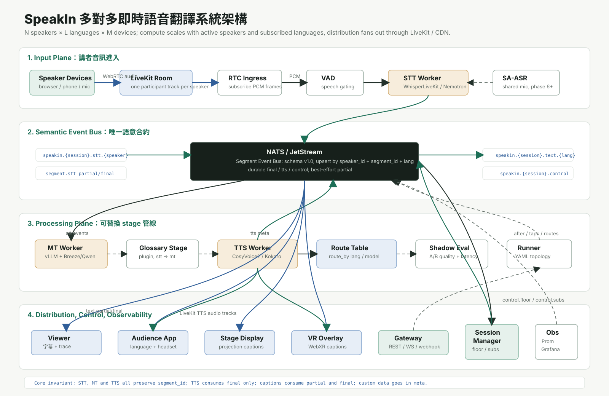

講者一人一軌，音訊進 VAD 與 STT worker。
Segment Event Bus
一條語意事件匯流排，連接所有輸入、模型與輸出端。
所有輸入端化約成事件，所有輸出端只是訂閱者。LiveKit 負責音軌扇出， NATS 負責語意事件，stage 只依賴 schema。
Phase4LiveKit 整合中
PoC2 x 3講者 x 語言
首聲1.17sfinal 到聽端首聲
→
`segment.stt`、`segment.mt`、`segment.tts` 與 control event。
→
模型 stage 可替換，成本跟同時開口人數與訂閱語言數相關。
→
字幕、譯音、講稿、大屏和外部應用皆為訂閱端。
Roadmap
PoC 進度
GPU、NATS、schema、語言護欄完成。
串流 STT、partial/final、replay 測試完成。
vLLM 翻譯、防抖、單語失敗隔離完成。
CosyVoice2 串流合成與 route_by 完成。
已完成 TTS 發軌；下一步是 mic ingress、viewer 與 floor control。
gateway、惰性 TTS、插件插入與壓測。
Monorepo
專案結構
Paper-style Diagram
完整節點與管道

allen-speakin/
├── schemas/ 事件 schema 單一事實來源
├── core/
│ ├── bus/ NATS 封裝
│ ├── rtc/ LiveKit SDK 封裝
│ ├── stage/ stage 基底與載入器
│ └── observability/ trace 與 metrics
├── stages/
│ ├── stt_whisperlive/ 串流 STT
│ ├── mt_vllm/ 翻譯 stage
│ └── tts_cosyvoice2/ 串流 TTS
├── pipelines/ YAML 拓撲
├── services/
│ ├── runner/ 管線執行器
│ ├── gateway/ REST / WS / token
│ └── session_manager/ control plane
├── frontend/ viewer / audience / stage display
├── deploy/ dev / staging / prod
├── tests/ unit / replay / load
├── 結構及技術棧.md
└── 代辦.mdNext
優先代辦
讓真實講者音軌進入 STT worker，完成雙裝置對講地基。
NATS callback 只派工，per-speaker 保序，跨 speaker 並行。
發布麥克風、選語言、訂閱字幕與 TTS 音軌。
實作 `after:` 與 topic 改寫，讓插件插拔成為真能力。
final、tts meta、control 需要 ack 與 replay。
維護 presence、active speaker、語言訂閱與 TTS 惰性啟動。